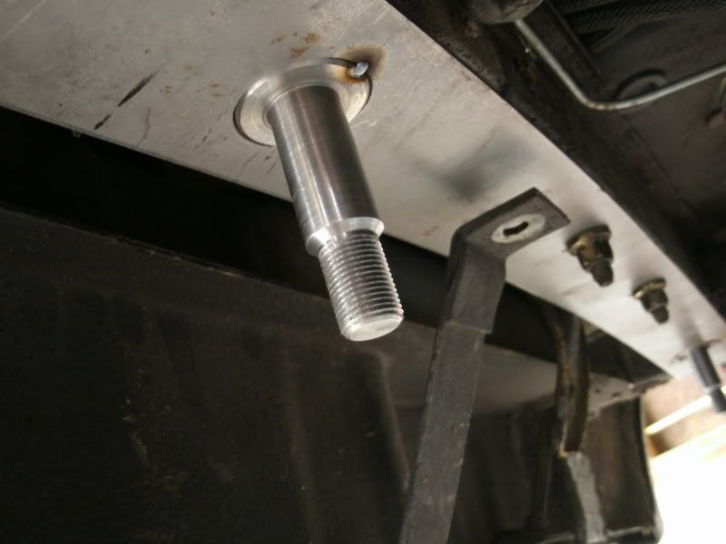

-
Over the past couple months I have been quite busy, developing a "kit" to allow the dedicated Z31 owner to easily install a 240sx rear suspension into there Z31 chassis. The kit takes away all of the measuring/thinking required for the swap.
The kit is still in its prototype phase, so you will notice from the pictures that things are tack welded, or only partly assembled. I will update with more when all is complete. Note that I am using STANCE aluminum subframe bushings, but the kit allows you to use ANY aftermarket bushings, whether rubber, polyurethane, or aluminum. Additionally, any of the aftermarket 240sx subframe risers can be used to fine tune anti-squat and roll center geometry.
HOW DOES IT WORK?
Perhaps you already have an idea of whats required for mounting the 240sx subframe in a Z31, as its been documented by Z31Performance member Butter in this thread: viewtopic.php?f=2&t=22 In short, the rear mounts of the subframe line up with a frame member in the rear of the car. The front mounts nearly reach the Z31 chassis spikes, but require some extension of some sorts for the install. Some light notching/hammering is also required.
One issue that people always run into with installing the kit is the measurements and calculations. Centering the subframe is very important, but perhaps more important is getting the subframe "tilt" correct; it dictates anti-squat and roll center. This tilt is critical for how the rear of the car grips. Some people want less, others want more. To find a middle ground, I have taken the time to compare the chassis measurements of the S13 and Z31 rear chassis. Given this, the kit is correctly designed to give you the exact same anti-squat and roll center dimensions of the S13 chassis. Many aftermarket "riser bushings" exist (SPL parts for example) to fine tune subframe tilt, allowing you to increase or decrease the traction available at the rear of the car.
The kit I have created includes two main pieces, which I will call the rear bar, and the front extensions.
The Rear Bar
The rear bars purpose is to locate and secure the rear mounts of the subframe. For install, the bar is mounted to the Z31 chassis, aligning with the OEM differential mount studs.

As pictured above, two CNC machined steel "spikes" extend from the rear bar. These spikes are the new mounting studs for the 240sx subframe. Once secured by the OEM differential mount studs, the rear bar is welded to the frame member, including these C-channel pieces:
This completes the mounting of the rear of the subframe. You now have 2 studs protruding from the Z31 chassis to accept the 240sx subframe.
The Front Extensions
With the rear of the subframe bolted up into place over the studs, the front mounts are now examined. The OE 240sx subframe mounts are a bit short; they dont fully extend to the Z31 chassis studs:
To extend the subframe mounts, first the mount is cut in half:

Then, this piece (front extension) is welded to the subframe. An additional gusset plate will box the "U" shape in, and will be fully welded.

[u]WHAT COMES IN THE KIT/WHAT DO I NEED?
The kit includes the rear bar with CNC machined studs already TIG welded in place. Two C-channel pieces are included to "cup" the frame rail and be welded in place. The kit includes two "U" pieces to extend the front mounts, and associated gusset plate.
To install the kit you will need a MIG welder and angle grinder. You will need some type of aftermarket subframe mounts, whether aluminum or polyurethane, such as STANCE, or SPL. You will need to do some notching of the frame rails. When using the wider S14/S15 subframe, you will NEED TO HAVE offset S13 conversion bushings such as these:
Obviously, to experience the benefits of this swap, you will want aftermarket suspension links for camber, toe and traction adjustment. You also need to hook up the 240sx brakes, and have an extended driveshaft.. This is all covered in the multi-link swap thread posted above.
WHAT'S THE COST?
See this thread for more details!
http://z31performance.com/showthread…-Kit-Group-Buy"produce first.talk second." -
Re: S13/S14 Subframe Conversion Kit GROUP BUY
I'm willing to bet this would also work on S12, 510, and M30. At least, with minimal modification.sigpic -
Re: S13/S14 Subframe Conversion Kit GROUP BUY
How much just for the rear bar part with studs because I already have my solid front mount parts made?
Also did you guys have to notch the frame any to gets yours to fit properly?1uz Swapped, lowered, flaked out '86 z31
'72 Datsun 510 4dr, ka24de-T, slammed resto mod
'84 z31 turbo, coils, wheels a.k.a the gfs weekend car
'86 na2t parts for now a.k.a eventually will get running with a/c daily
'83 280zx project backburner a.k.a ls turbo drag car one day
Custom vg30et tube chassis drift exocet project -
Re: S13/S14 Subframe Conversion Kit GROUP BUY
Yes.badboyz31 wrote:
Also did you guys have to notch the frame any to gets yours to fit properly?sigpic -
Re: S13/S14 Subframe Conversion Kit GROUP BUY
im down86na - BlueZ
Shiro #366 - Kouki Monster
85t - Mr Tickles -
Re: S13/S14 Subframe Conversion Kit GROUP BUY
PM sent.
Thanks for the interest. If anyone has questions, don't hesitate. This kit makes the subframe install a weekend affair."produce first.talk second." -
Re: S13/S14 Subframe Conversion Kit GROUP BUY
S12's have no rear shock towers, so that's problem number one…the rest of the fitment we hope to have checked in the next few months…when I get all my broken shit out of the way so I can move cars around.Butter wrote: I'm willing to bet this would also work on S12, 510, and M30. At least, with minimal modification.
1987 Nissan 300ZX Turbo (Budget Supercar)
1987 Nissan 200SX SE (Old School FR)
1994 Nissan Sentra SE-R (Balls To The Wall Track Car)
2000 Nissan Maxima SE (Daily Driver)
2006 Scion tC (Wife Whip)
In an ideal world I would have all ten fingers on my left hand, so my right hand could just be a fist for punching. -
Re: S13/S14 Subframe Conversion Kit GROUP BUY
Well, this just makes it too easy…
My poly bushings have been squeaking recently due to me not applying enough grease on them when I did the camber mod. I was on the verge of pulling everything apart again to regrease them, but this has convinced me that the next time I touch the semi-trailing arm rear suspension in my car, it will be to remove it completely…
I, for one, welcome our new Z31 aftermarket overlords.
I'll have the money for this soon…Tinker Toy Equipped

-
Re: S13/S14 Subframe Conversion Kit GROUP BUY
be interested to see how this turns out in 6-8mo's, then i might be interested.

1988 300zxt. gt35, stance, etc. Wheels: Varrstoen ES2 18x9.5 et-13 225/40. 18x10.5 et0 245/40
1990 jetta vr6'd -
Re: S13/S14 Subframe Conversion Kit GROUP BUY
Edited for a few details about what's been done concerning Anti-Squat and Roll center."produce first.talk second." -
Re: S13/S14 Subframe Conversion Kit GROUP BUY
In 6-8 months time, it is just going to be "the way it's done".DeleriousZ wrote: be interested to see how this turns out in 6-8mo's, then i might be interested.
Also, if you could get this down to maybe a 5 minute install THEN I might buy one. One weekend is far too long for superior suspension geometry.85 Z31 6.0 LSX turbo 766whp/792wtq
04 GTO, LS6, big cam, porting, N20… underway for summertime daily driver. -
Re: S13/S14/S15 Subframe Conversion Kit GROUP BUY
I have received a few questions about the price.
The total price will be between $150 and $200. Your $50 deposit counts towards this price, it is not extra. The final amount then (between $100 and $150) will be due prior to shipment.
Hope this clears up any confusion."produce first.talk second." -
Re: S13/S14/S15 Subframe Conversion Kit GROUP BUY
What's the difference between this kit and the one Chungingzhou sells for $198.45? Maybe just the glue it uses? I don't know if I can justify paying more for the swap kit than what I spent on the whole subframe....sigpic -
Re: S13/S14/S15 Subframe Conversion Kit GROUP BUY
hahahahahahaha.Butter wrote: What's the difference between this kit and the one Chungingzhou sells for $198.45? Maybe just the glue it uses? I don't know if I can justify paying more for the swap kit than what I spent on the whole subframe....
Question for you Mike.
if i pay now, 50 bucks- does that ensure that my kit will be made- and say if there are other personal costs at the time of production, will it be waiting in a box for me for a predetermined reasonable amount of time before they're back on the auctioning block (if yes, what is reasonable to you?).
I.E - buying injectors, rails, couplers, fittings, etc… might get costly- but I want to secure a set with 50 bucks if possible. -
Re: S13/S14/S15 Subframe Conversion Kit GROUP BUY
HAHAHA.
Okay your right I forgot, deadbeat Z31ownersforum.
Lets say, if you pay the deposit, and I make you a kit, you will have 4 weeks to come up with the remaining $100 or $150 or whatever… After that I am selling it to someone else and not giving you ANY refund. :bombe"produce first.talk second."

Copyright © 2006–. All rights reserved. Privacy Policy